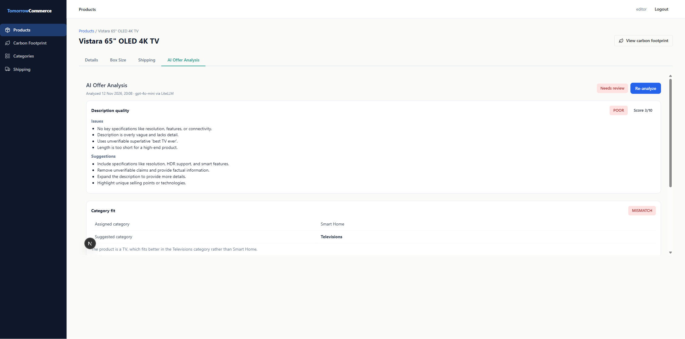

Executive Summary
plugins/ai-offer-analysis meets the Module 3 task: BAML returns structured output, every call goes through LiteLLM, and the plugin checks description quality, category fit and price against the market on port 3011. The tab, badge and list filter all work. Five independent reviews found no critical defects. The warnings cover prompt quality on price, error-mapping precision, log hygiene and a shared-config decision.
Implementation Plan Verification (completeness-report.md)
- Steps: 58 of 58 checked (100%); code spot-checks found every group present.
- Visual coverage: 9 of 9 screens/components.
- Accepted deviations, all confirmed in code: "Invalid categories payload" maps to HOST_ERROR; Re-analyze is hidden in the error state; a "Loading analysis…" state was added.
Test Suite
Cycle 2 (test-suite-runner, after fixes): plugin Jest 58/58, tsc clean; host ./mvnw test 159/159 with both 013 changesets applied. Host frontend vitest 81/83 and ai-description Jest 6/8: these failures predate this task (no frontend, Java or test-tree changes), so there are no regressions. Overall 304/308 (98.7%), see test-suite-results.md.
Cycle 1: the suite was not run again in that cycle, because it passed at the end of implementation:
- Plugin Jest: 2 suites, 55 of 55 cases (18 blocks). The completeness checker and reality assessor both re-ran it: 55 of 55.
- Host
./mvnw test: 159 of 159 with the 013 seed applied (Group 6). No Java changes since. npm run buildpasses andtscis clean.
Standards Compliance
Mostly compliant: 14 of 14 applicable standards followed. One gap: the litellm/config.yaml change is outside the spec's scope. The user approved it, but it is shared config.
Documentation
Complete. The plugin README, root README, CLAUDE.md, plugins/CLAUDE.md and the maister docs are updated, and the port rule now says the next business module is 3012. Info: the spec and plan still expect "Televisions, 2" on the compact FAIR line (the README is corrected), and the accepted deviations are not recorded in the spec.
Optional Reviews
| Review | Verdict | Key points |
|---|---|---|
| Code review (code-review-report.md) | ⚠️ 0 critical / 4 warning / 13 info | EDIT gate, sanitized errors, no dangerouslySetInnerHTML, effects correct. Warnings: peer-copied market range; shared OpenRouter alias; every 400 maps to CONTENT_BLOCKED; no tests for the missing-bearer and host-401 order |
| Pragmatic (pragmatic-review.md) | ✅ Appropriate (0 critical / 2 medium / 7 low) | About 1.36k LOC, justified by scope. Optional slimming: toOfferAnalysis re-parsing, 9 useState hooks in the tab |
| Production readiness (production-readiness-report.md) | ⚠️ GO with mitigations (local dev); NO-GO for real production | Cost gate and timeout are good, observability is verified. Fix the raw-error logging and set BAML_LOG=warn. Production-only gaps: hardcoded localhost URLs, master key instead of a virtual key, no rate limit |
| Reality check (reality-check.md) | ⚠️ Issues found (about 90%) | 6 of 8 requirements fully met. The price check is distorted by peer copying. The LiteLLM panel needs user confirmation |
Live-Run Evidence (work-log, Group 9)
- Request count: 4
llm-calllines (all ok) produced 4LiteLLM_SpendLogssuccess rows, a delta of 4 since 2026-11-12T19:07:31Z. - Attribution:
end_user = ai-offer-analysisandrequest_tags = ["ai-offer-analysis"];model_group gpt-4o-mini→openrouter/openai/gpt-4o-mini. - Prompt: contains "USD 2799.00" unmasked; Presidio ran.
- Langfuse: 4 AnalyzeOffer traces.
- Runtime behaviour: a hidden tab does not trigger an analysis, viewers cannot run one, the badge refreshes through BroadcastChannel, and the filter shows exactly the 2 flagged demo products.
Fix & Re-Verification History
| Issue | Fix applied (cycle 1) | Re-check (cycle 2) |
|---|---|---|
| 1 Peer-copied market range | BAML pricedAs and reasoning now come before the numbers; the prompt forbids a peer-derived range; a domain guard nulls the deviation and sets LOW confidence (MISMATCH and range inside the peer range); the tab shows "Priced as" | ✅ resolved: live run, Vistara "65-inch OLED 4K TV" FAIR +12% (was +1117%); guard tested |
| 2 Shared OpenRouter mapping | Tried OPENROUTER_API_KEY (live run: 401, because the key was not present locally); reverted to OPENAI_API_KEY holding the OpenRouter key, per the user's decision; config comment, .env.example, README and conventions aligned | ✅ resolved: docs consistent with the config; no stale claims |
| 3 Every 400 mapped to CONTENT_BLOCKED | CONTENT_BLOCKED only for a 400 that carries a guardrail marker; any other 400 maps to LLM_UNAVAILABLE | ✅ resolved: tested both ways |
| 4 Missing route tests | Missing bearer → 401 and host 401 → no LLM call | ✅ resolved |
| 5 Raw error logging | Failure log reduced to one sanitized line (error name, status, message truncated to 200 chars); the line is asserted in a test | ✅ resolved: observed live in the plugin log |
| 6 BAML_LOG | BAML_LOG=warn added to the plugin .env.example and README | ⚠️ resolved in the repo; still missing from the local .env |
Cycle 2 reports: test-suite-results.md, code-review-reverify.md (0 critical, 1 warning, 7 info).
Fix round 2 (after cycle 2):
| Issue | Fix | Check |
|---|---|---|
| R1 Spec out of date | New "Spec deviations (Phase 11 fix cycle 1)" section (a–g) plus 29 inline "amended" notes in spec.md; spec.html mirrored | ✅ resolved |
| R5 Stale docs | plugins/CLAUDE.md .env contents; plugin README prompt-location line (plus the CONTENT_BLOCKED markers and marketRangeUnreliable notes) | ✅ resolved |
| R4 Generic guardrail regex | /guardrail|presidio|blocked pii|pii entit/i over message and raw_response only; new row: a generic "blocked"/"not allowed" 400 maps to LLM_UNAVAILABLE | ✅ resolved: Jest 59/59 |
| R3 Guard UI | price.marketRangeUnreliable flag; the tab shows "market range unreliable" plus a note instead of the copied numbers; guard test asserts the flag | ✅ resolved: tsc clean, build OK |
Side effect: npm run build overwrote .next under the running dev server (pages returned 500). The orchestrator restarted the dev server and both pages now return 200. Possible standard: never run next build while next dev is running in the same plugin directory.
Issues Requiring Attention (after fix round 2)
| # | Severity | Source | Issue | Location | Fixable |
|---|---|---|---|---|---|
| R2 | warning | reality, completeness | The LiteLLM UI panel was not opened in person; the check went through LiteLLM_SpendLogs | user action | manual |
| R4b | info | fix round 2 | The guardrail regex has not been checked against a real Presidio CREDIT_CARD block | analyze.ts | manual |
| R6 | info | code_review (reverify) | BAML_LOG=warn is missing from the local .env (user action) | local .env | manual |
| R7 | info | production, reality | The plugin uses the LiteLLM master key, not a scoped virtual key | .env | — |
| R8 | info | production, code_review | Hardcoded localhost URLs; no rate limit on /api/analyze | various | — |
| R9 | info | pragmatic | toOfferAnalysis re-parses its own record; the tab has 9 useState hooks | domain.ts, product-tab.tsx | optional |
| R10 | info | test-suite | Failures that predate this task: frontend auth.test.tsx, extension-points.test.tsx; ai-description 2 tests | other suites | out of scope |
| R11 | info | production | npm audit (postcss, build time); unpinned compose images; seed manifest kept in sync with manifest.json by hand | various | — |
Overall Assessment
| Dimension | Result |
|---|---|
| Implementation | ✅ 100% |
| Tests | ✅ 58/58 plugin, 159/159 host (cycle 2); no regressions |
| Standards | ⚠️ mostly compliant (shared-config gap) |
| Documentation | ✅ complete |
| Code review | ✅ cycle 2 plus round 2: all review warnings resolved |
| Pragmatic | ✅ appropriate |
| Production | ⚠️ go with mitigations (local dev); log hygiene fixed |
| Reality | ⚠️ price quality fixed and confirmed live; UI confirmation still pending |
| Overall | ⚠️ Passed with Issues |
Recommendations
- Add
BAML_LOG=warnto the local plugin.env(R6) and confirm the LiteLLM UI Logs page (R2). - Optionally trigger one CREDIT_CARD block (e.g. a demo product description containing a test card number) to confirm the CONTENT_BLOCKED mapping live (R4b).
Verification Checklist
- Completeness checker run
- Test suite (skipped: passed in implementation; re-run by the reviewers)
- Code review, pragmatic review, production readiness and reality check run
- All 5 review reports present on disk
- Overall status determined
- Cycle 2: test-suite-runner and code-review re-check after fixes
- Fix round 2 applied (R1, R3, R4, R5); Jest 59/59,
tscclean, build OK, dev server restarted (pages 200)
